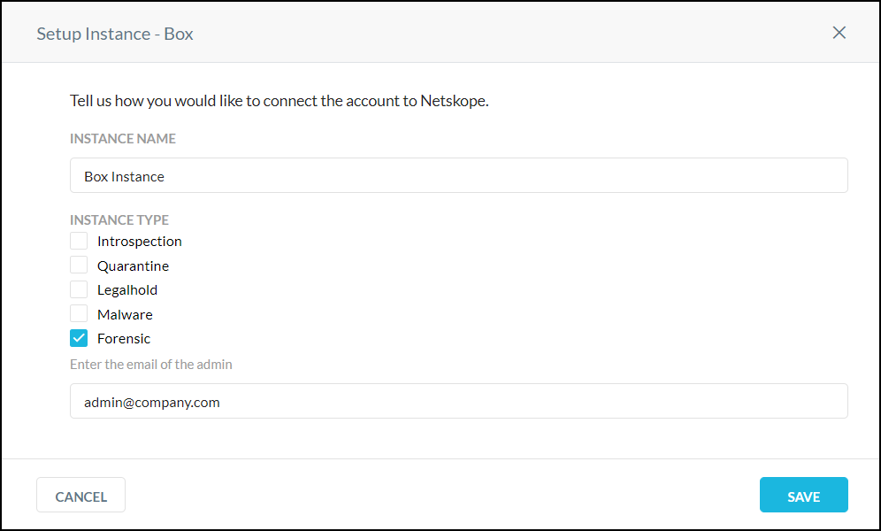
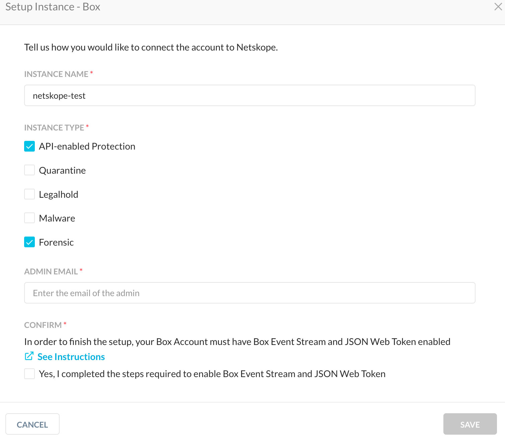
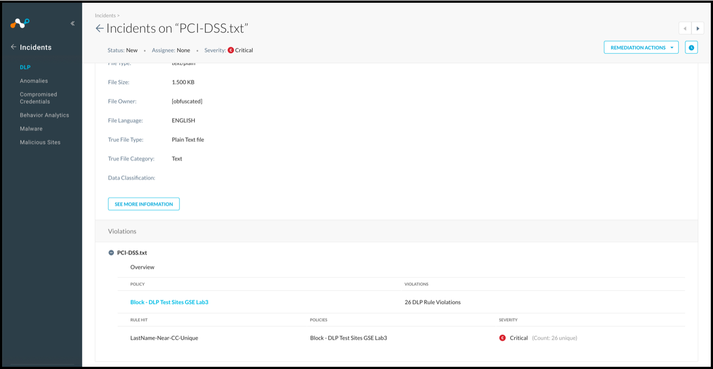
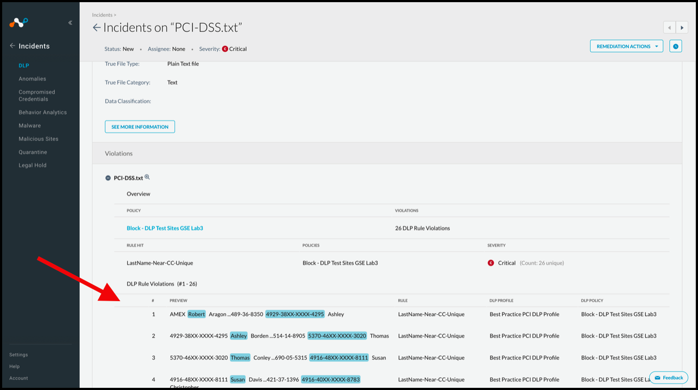
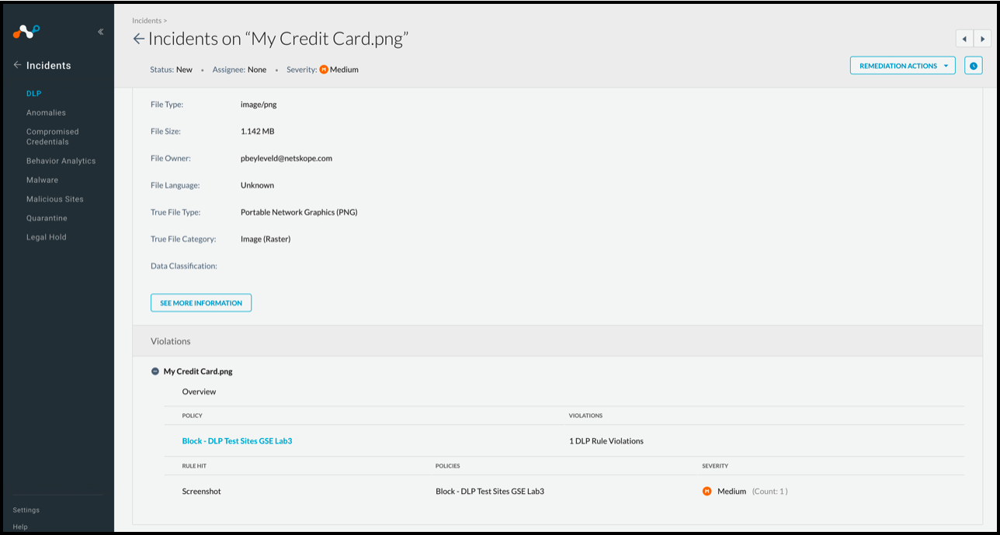
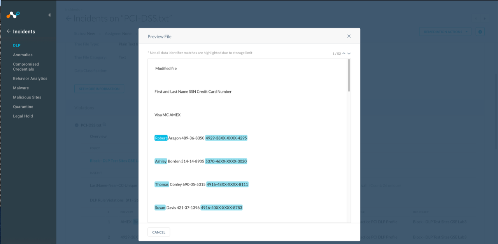

Forensics
With Forensics, you can see all the information you need in terms of what your users are doing in the cloud and what you should be looking at. When a violation is found, the object is placed in a forensics folder so you can review the specific types of sensitive data that are exposed. An automated cloud policy enforcement program is necessary for getting to a quick resolution and remediation.
To use Forensics, you need to:
Configure API Data Protection for the app(s) you want to store forensics data.
Create a forensic profile that flags policy violations and stores the files in a forensic folder.
Note
For most apps, the user email ID is needed and must be a valid user ID in the app. It can be an admin user ID or a normal user ID. A forensic folder named Netskope Forensic Folder will be created inside the respective user's ID account. Create this user email ID 24 hours before creating the Forensic profile.
Enable the forensic profile in an API Data Protection DLP policy.
Review the violations within specific files and take remedial action by contacting users and managing files in the forensics folder.
Note
For Office 365 apps, it is recommended to use Azure blob storage as a forensic destination.
Use Cases
These are the Forensics use cases.
Store Forensics Data
One use involves Real-time Protection; API Data Protection is not needed for SaaS app cloud storage. The goal here is to use a specific SaaS app cloud storage space for Forensic data. Setup the SaaS app instance in UI: Settings > API-enabled Protection > SaaS > Setup Instance. Choose only Forensic as shown when setting up the SaaS app instance.
|  |
Use API Data Protection and Store Forensic Data
The second use includes API Data Protection as well as Forensic data storage, but keeps the Forensic data in a specific user space (like forensic@domain.com user space). Setup the SaaS app instance in the UI: Settings > API-enabled Protection > SaaS > Setup Instance. Choose API Data Protection and Forensic as shown when setting up the SaaS app instance.
|  |
Create the required user ID, like forensic@domain.com, wait 24 hours, and then configure a Forensic profile using the user email ID for forensic@domain.com and enable it. This will create a Netskope Forensic Instance folder in the forensic@domain.com user space and store Forensic data there.
You can choose quarantine, legal hold, and malware as well.
View Forensics Data
Go to Incident > DLP to view Forensics data. You must be an Administrator with the required permissions to access the data.
 |
Click on an incident to view the details.
|  |
Forensic data is shown at the bottom of the detailed view when it is available, displayed with text-based DLP rules. ML-based rules do not display this type of forensic data. This is only visible when the admin role is allowed file access.
|  |
Here is an example of what is shown for an ML-based rule violation.
|  |
You can also view the data by clicking on the magnifying glass icon next to the file name in the Violations section.
|  |
Here's an example of what a restricted admin sees when trying to access the data, or when Forensics is not configured.